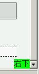

初期コンテナブロックのサイズは内容物の量に関わらず、閲覧領域のサイズと同じになっている。このため、幅や高さを明示していない初期コンテナブロックに対して絶対配置する要素は、閲覧領域に対して配置されてしまう。
<div style="position:absolute; bottom:0; right:0; background:lime;"> 右下</div>
このdiv要素は、文書全体の右下部に配置されるはずです。
Opera7.22標準モード
WinIE6.0標準モード
WinIE6.0で不具合の発生を確認しました。